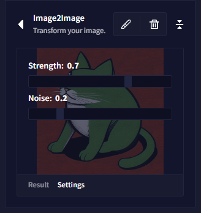
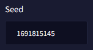

Frequently Asked Questions
Privacy
Are my generations stored?
No, none of your generations are stored or saved. Images are generated session wise. If you wish to keep the generated images, you must manually download them, otherwise your generations are lost upon refresh or when leaving the Image Generation page.
Can anyone see what I generate? Do you keep track of my prompts, image uploads, drawings, or generations?
No, none of your requests, uploads, edits or generations are logged or stored on our side.
Does NovelAI store Image2Image data such as my Uploaded Image or Canvas drawings?
Images you upload are sent as base64 encoded text to prompt a generation, and are not stored on NovelAI.
Who holds the copyright of my generation? Can I monetize my generations?
NovelAI does not claim any ownership over the images you generate and waives any responsibility that arises from usage outside the service.
What if I want to use my generation outside of NovelAI?
NovelAI does not claim copyright protections or ownership of any files. Images are treated as Content as defined in Section 1.4 in the Terms of Service. You must conduct your own research if you want to use your generated images for any settings outside NovelAI.
I refreshed or left the Image Generation and now everything is gone! Why?
Your generations are session-based. Upon closing, all data is removed, and your history queue is emptied. Make sure to frequently save any content you want to keep permanently!
General Tips
I lost my text prompt, seed or settings! Can I restore them?
The prompt text, settings and seed of your generations can only be retrieved through the Exif data of a saved file. If you use the clipboard export option, it will not contain any Exif data. Images saved with right-click & save do not contain Exif data either. The save icon located to the bottom of the image has to be used for the data to be contained.
Prompt Tips
How can I restore a previous prompt?
If you have the image in your History bar, you can use CTRL + Click to restore the prompt and the previous settings.
How do I avoid repeating subjects?
If you have a lot of repeat subjects, specifying the subject in your prompt might help as well, try adding defining tags such as "1girl" (or boy, animal or whatever your focus is), “solo", or “single focus”, "couple focus" etc.
The subject of my prompts looks lackluster. What can I do?
If you feel your generations lack a special something, then try adding tags that are a little more dynamic or exciting: masterpiece, cinematic shot, highly detailed, dynamic angle, cinematic shadows, action shot, deep shadows, intricate details, award-winning, beautifully lit, dramatic angle, intense angle, dynamic angle, cinematic lighting, cinematic angle, masterpiece portrait, dramatic angle, dramatic shadows etc.
Why are there signatures on my generations?
The AI associates your type of image with signatures like those found in artists' works, branding or on specific websites. It has learned the characteristics of different types of works, just like a person would.
小贴士： You can try adding unwanted generation aspects to your Undesired Content text field, or use Edit Image, paint over the area with a matching color and run the same prompt again.
Does capitalization in my text prompt matter?
No. The CLIP embeddings that text prompts are based on are not case-sensitive. Any capitalization will be ignored.
Why is everything generating the same image?
Double check if you are using an Image2Image upload or edited canvas by looking if there is a small thumbnail visible on the left of your text prompt input box.
Example: 
You may also be generating off the same Seed, which doesn't allow the AI to make any further adjustments. Take a look in your sidebar and remove the Seed number if necessary.

Will users be able to train their own Custom Image Generation Modules?
At this time, we do not plan to allow users to create their own Image Modules.
Is the AI copying and piecing together artists' works!?
Nope, that's not quite how it works! Some great explanations on the topic can be found here:
- Explaining Diffusion based Image Generation
- Vox AI Art Explanation on YouTube
- The AI isn't an automatic Collage Machine
General Questions
I want to post my work on Social Media! Is there a tag I can use?
Feel free to tag us on social media, such as Twitter @novelaiofficial, and tag your generations with #NovelAI or #NAIDiffusion so we can follow the journey of your creations!